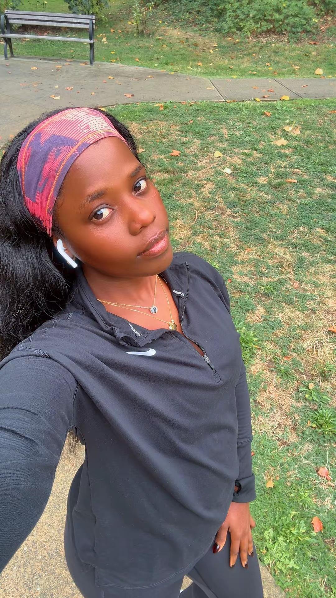

Still Outside · October challenge
Summer is over. You are not.
The sun went in and everybody moved indoors. You do not have to. For the next 31 days I am walking every single day, outside, whatever the weather is doing, and I would like you to come with me. It does not matter where you live.
It is free, there is nothing to buy, and you do not have to be fit to start. You just have to pick a lane and go outside.

Day one. October, and still outside.
Pick your lane
Four ways in. All of them count.
Choose the one that is a stretch but not a fantasy. The lane you finish is worth more than the lane you quit in week one.
Building the habit. If you are mostly at a desk, this is already a real change.
You already move most days. This makes it deliberate.
The lane I am walking. Roughly two hours on your feet, spread across the day.
You were going to do this anyway. Go on then.
No extra hour needed
Where the steps come from
You are not adding a workout to your day. You are moving the things you already do so that they happen on your feet. Almost nobody has a spare two hours. Nearly everybody has these.
One mission a week
Not just a number.
The steps are the floor. The missions are the reason you will actually remember this month.
A street, a trail or a park you have never walked before.
Whatever the sky is doing that week, go anyway. You will be fine.
A friend, a kid, a dog, or a phone call to someone you owe one.
One walk at sunrise, or one after dark. The city is different then.
Your longest walk of the month. Finish the way you started.
The rules
All of them.
- Pick one lane and stay in it, wherever you live. Any way you get the steps counts.
- Every day in October. Rest days still count, because walking is not training.
- Miss a day, start again the next one. Nobody restarts the month.
- Weather is not a reason. That is the entire point of doing this in October.
How to join
Comment OUTSIDE
Find the challenge post on Instagram, comment OUTSIDE, and I will send you the tracker. Tag me in your walks through the month and I will repost my favourites.